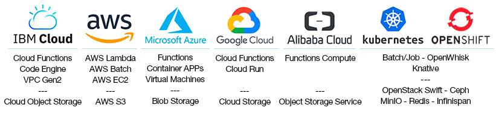

Welcome to Lithops!#
Lithops is a Python multi-cloud serverless computing framework that empowers you to run unmodified Python code at massive scale on leading serverless platforms and beyond.
Whether you’re processing terabytes of data or launching thousands of parallel tasks, Lithops lets you focus on your code, not infrastructure. It brings simplicity, performance, and flexibility to cloud-native computing.
Why Lithops?#
Serverless computing makes it easy to run code in the cloud — but scaling data-intensive workloads across clouds is hard. Lithops solves this by providing:
✅ Zero-configuration scale-out: Run your Python functions on thousands of cloud workers with no infrastructure management.
üåç True multi-cloud portability: Move seamlessly between AWS, GCP, Azure, IBM Cloud, etc‚Ķ
üí° Developer-first experience: Write standard Python code, including NumPy, pandas, and scikit-learn ‚Äî no cloud-specific boilerplate required.
ü߆ Optimized for big data and AI: Efficiently process massive datasets stored in object storage services with automatic partitioning.
What You Can Build#
Lithops is ideal for highly parallel, data-heavy workloads. These include:
üîÅ Monte Carlo simulations
üߨ Metabolomics and genomics pipelines
üó∫Ô∏è Geospatial analytics
ü߆ Deep learning and hyperparameter tuning
üìä Big Data ETL and analytics workflows
If your problem can be broken down into many small, independent tasks, Lithops will help you solve it at scale — fast.
Key Features#
Compute Anywhere#
Lithops features a modular and extensible backend architecture, allowing you to run workloads across:
Serverless functions
Cloud VMs and Kubernetes clusters
On-premise compute resources
No matter where your data lives, Lithops can execute your code right next to it.
Object Storage Made Easy#
Seamlessly process large-scale data stored in object storage.
Lithops simplifies working with data lakes and object storage by providing:
üîç Automatic data discovery: Detects and lists files across nested directories.
üìÇ Transparent data partitioning: Splits large files (e.g., CSV, Parquet, JSON) into chunks for efficient parallel processing.
üß∞ Unified, Pythonic API: Interact with your data using a single interface, regardless of where it‚Äôs stored.
You write simple Python code — Lithops handles the complexity of parallel I/O, data distribution, and storage backends under the hood.
Get Started Quickly#
To start using Lithops:
Install via pip:
pip install lithops
Configure your cloud credentials (see the Configuration Guide)
Write and run your first parallel job:
import lithops def my_function(x): return x * 2 fexec = lithops.FunctionExecutor() fexec.map(my_function, range(10)) print(fexec.get_result())
You’re now running massively parallel workloads with just a few lines of code!
Success stories#
Metaspace Metabolomics Platform is running in production in AWS with hundreds of users. MetaSpace is using Lithops over Lambda Functions and EC2 VMs to access metabolomics data in Amazon S3. MetaSpace moved from Spark to Lithops to simplify dynamic and elastic resource provisioning.
OpenNebula Open Source Cloud and Edge Computing platform integrates Lithops as an easy-to-use appliance for data analytics. OpenNebula also deploys MinIO storage and Lithops Kubernetes backend to facilitate data analytics in on-premise and edge deployments.
Cubed is a popular library for scalable multidimensional array processing with bounded memory. Cubed is a drop-in replacement for Dask’s Array API. Cubed integrates Lithops as a fast compute backend enabling scalable array processing in the Cloud.
BSC Marenostrum 5 SuperComputer is a pre-exascale EuroHPC supercomputer with a peak computational power of 314 PFlops. A new Lithops HPC compute backend has been created enabling large-scale computing reaching tens of thousands of concurrent functions. LithopsHPC is now being used in the neardata.eu project for extreme data analytics of genomics pipelines.
Blogs and Talks#
Simplify the developer experience with OpenShift for Big Data processing by using Lithops framework
Speed-up your Python applications using Lithops and Serverless Cloud resources
CNCF Webinar - Toward Hybrid Cloud Serverless Transparency with Lithops Framework
Using Serverless to Run Your Python Code on 1000 Cores by Changing Two Lines of Code
Decoding dark molecular matter in spatial metabolomics with IBM Cloud Functions
Your easy move to serverless computing and radically simplified data processing Strata Data Conference, NY 2019
Predicting the future with Monte Carlo simulations over IBM Cloud Functions
Process large data sets at massive scale with Lithops over IBM Cloud Functions
Papers#
Serverful Functions: Leveraging Servers in Complex Serverless Workflows - ACM Middleware Industrial Track 2024
Transparent serverless execution of Python multiprocessing applications - Elsevier Future Generation Computer Systems 2023
Outsourcing Data Processing Jobs with Lithops - IEEE Transactions on Cloud Computing 2022
Towards Multicloud Access Transparency in Serverless Computing - IEEE Software 2021
Primula: a Practical Shuffle/Sort Operator for Serverless Computing - ACM/IFIP International Middleware Conference 2020. See Primula presentation here
Bringing scaling transparency to Proteomics applications with serverless computing - 6th International Workshop on Serverless Computing (WoSC6) 2020. See Workshop presentation here
Serverless data analytics in the IBM Cloud - ACM/IFIP International Middleware Conference 2018
Join the Community#
Lithops is an open-source project, actively maintained and supported by a community of contributors and users. You can:
üí¨ Join the discussion on GitHub Discussions
üêû Report issues or contribute on GitHub
üìñ Read more in the full documentation
—
Start writing scalable cloud applications — with Lithops.